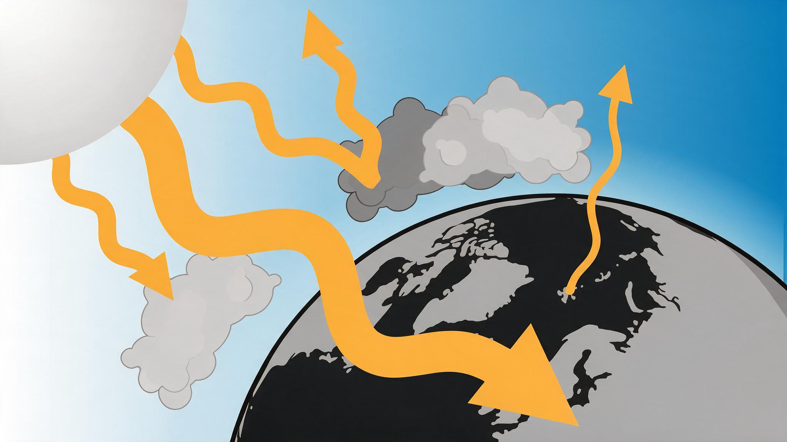
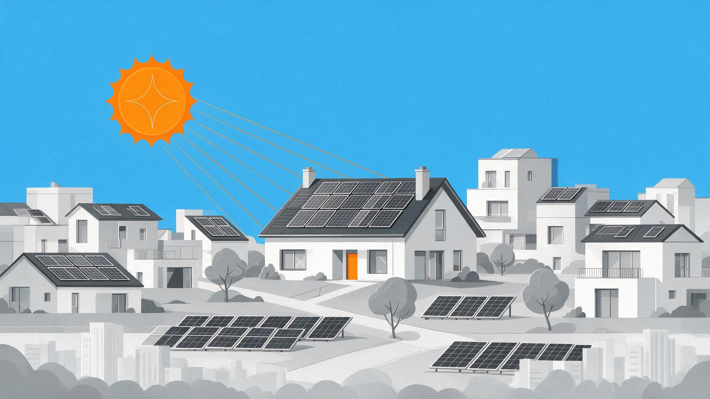
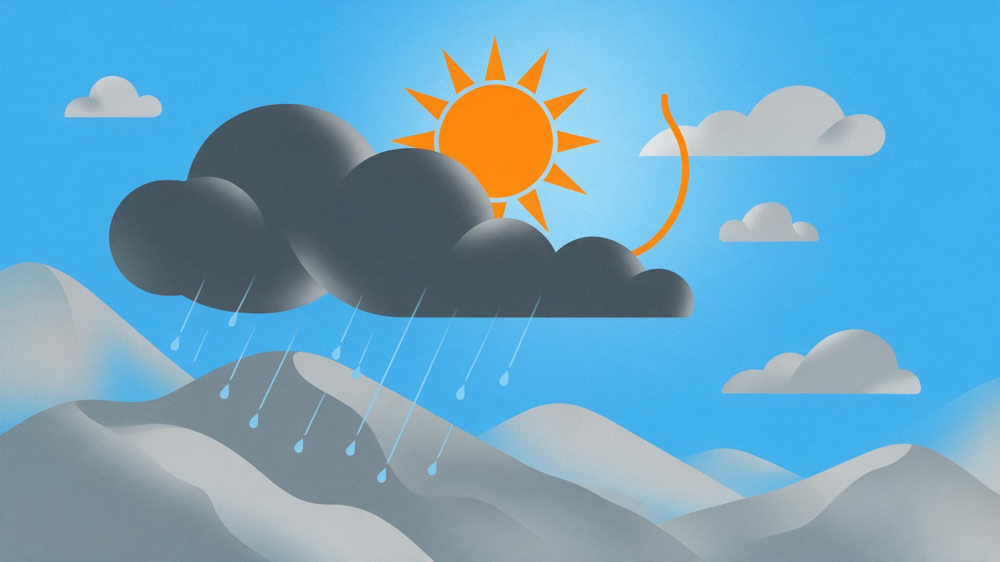
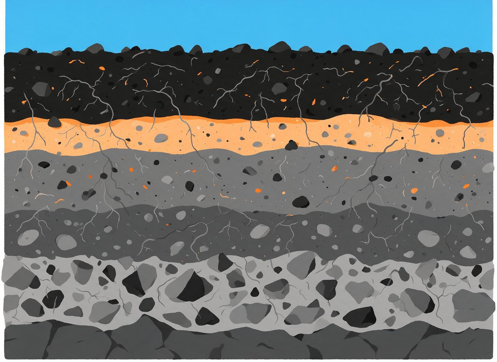

Understanding Our Environment
Here's a closer look at everything we track, from a quick overview below to exactly how each station takes its readings.
Quick overview
Radiation
Natural background variation.

Background radiation is part of everyday life. It's in the ground, the air, and even the materials buildings are made of. We track it around the clock so you can see what's normal day to day.
Solar
Solar energy and climate metrics.

From bright afternoons to overcast days, this tracks how much sunlight we're actually getting, giving useful context for both weather and solar energy potential.
Weather
Temp, humidity, precipitation.

The conditions right outside your window, tracked live around the clock, from a passing rain shower to a sudden shift in wind.
Soil
Moisture and ground health.

What's happening a few inches below the surface matters too, so we keep an eye on it to understand how ground conditions shift over time.
What Each Station Measures
The RWS network tracks the environment around North Campus with sensors at four stations, from the rooftop down to the basement. Here's what each group of instruments actually records.
Weather
Air temperature, humidity, and barometric pressure from BME680 sensors, plus wind speed, wind direction, and rainfall from the roof station.
Radiation
Background gamma radiation counted by Geiger tubes, reported as counts per minute. Levels here are typical background and vary naturally with weather and seasons.
Radon
Radon concentration in air, measured by RadonEye detectors and a RAD8 monitor in pCi/L. Radon is a naturally occurring radioactive gas that seeps from the ground.
Soil & Sun
Soil moisture and soil temperature probes track ground conditions, while a solar radiation sensor measures incoming sunlight intensity.